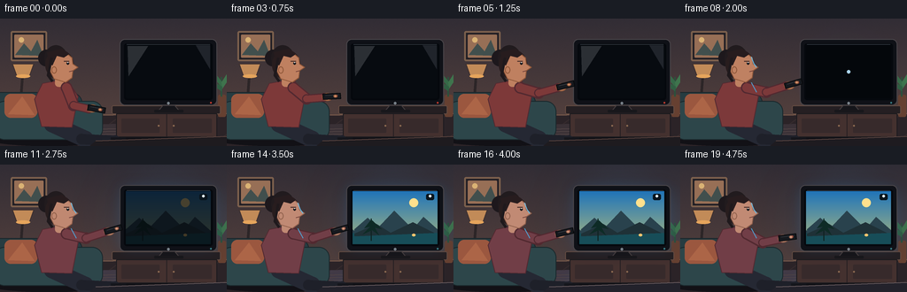
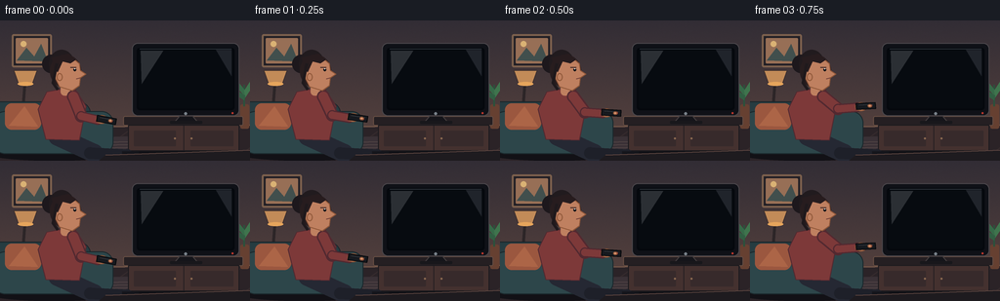

CODING AGENTS AS PIXEL WORLD MODELS
traex/GPT-5.6-Sol · motion_rationality_0044
点击播放 · 原生 RGB 像素
逐轮保存的候选
回放视频、检查图与代码变化。
每份候选均可单独播放。实际图片检查记录在下方工具轨迹中。
候选 01播放与检查图
点击播放 · 原生 RGB 像素


展开代码变化
--- 上一保存版本
+++ 本次保存版本
@@ -0,0 +1,291 @@
+from pathlib import Path
+import math
+import numpy as np
+from PIL import Image, ImageDraw, ImageFilter
+import artifact_io
+
+W, H, N = 256, 144, 20
+S = 4
+SW, SH = W*S, H*S
+ROOT = Path(__file__).resolve().parent
+rng = np.random.default_rng(44)
+# A single fixed texture for every frame: natural material detail without temporal noise.
+wall_noise = rng.normal(0, 0.85, (SH, SW)).astype(np.float32)
+rng_for_frame = [wall_noise] * N
+
+
+def sc(v):
+ if isinstance(v, (tuple, list)):
+ return tuple(int(round(x*S)) for x in v)
+ return int(round(v*S))
+
+def smooth(x):
+ x = max(0.0, min(1.0, x))
+ return x*x*(3-2*x)
+
+def lerp(a,b,t): return a+(b-a)*t
+
+def rr(draw, box, radius, fill, outline=None, width=1):
+ draw.rounded_rectangle(sc(box), radius=sc(radius), fill=fill, outline=outline, width=sc(width))
+
+def ellipse(draw, box, fill, outline=None, width=1):
+ draw.ellipse(sc(box), fill=fill, outline=outline, width=sc(width))
+
+def poly(draw, pts, fill, outline=None, width=1):
+ p=[sc(x) for x in pts]
+ draw.polygon(p, fill=fill)
+ if outline: draw.line(p+[p[0]], fill=outline, width=sc(width), joint='curve')
+
+def line(draw, pts, fill, width=1, joint='curve'):
+ draw.line([sc(x) for x in pts], fill=fill, width=sc(width), joint=joint)
+
+def capsule(draw, a, b, width, fill):
+ line(draw,[a,b],fill,width)
+ r=width/2
+ ellipse(draw,(a[0]-r,a[1]-r,a[0]+r,a[1]+r),fill)
+ ellipse(draw,(b[0]-r,b[1]-r,b[0]+r,b[1]+r),fill)
+
+def glow_layer(center, radii, color, alpha):
+ layer=Image.new('RGBA',(SW,SH),(0,0,0,0)); d=ImageDraw.Draw(layer)
+ cx,cy=center; rx,ry=radii
+ ellipse(d,(cx-rx,cy-ry,cx+rx,cy+ry),(*color,alpha))
+ return layer.filter(ImageFilter.GaussianBlur(sc(max(rx,ry)*.36)))
+
+def rotated_rect(cx,cy,length,width,ang):
+ ux,uy=math.cos(ang), math.sin(ang)
+ vx,vy=-uy,ux
+ return [(cx+ux*length/2+vx*width/2,cy+uy*length/2+vy*width/2),
+ (cx+ux*length/2-vx*width/2,cy+uy*length/2-vy*width/2),
+ (cx-ux*length/2-vx*width/2,cy-uy*length/2-vy*width/2),
+ (cx-ux*length/2+vx*width/2,cy-uy*length/2+vy*width/2)]
+
+def render(frame):
+ t=frame/(N-1)
+ # TV state: physical click at frame 7, electrical response follows.
+ on=smooth((frame-7)/5)
+ content=smooth((frame-10)/3)
+ aim=smooth(frame/6)
+ lower=smooth((frame-14)/5)
+ # Warm plaster wall, darkening just slightly when the cool TV comes alive.
+ yy=np.linspace(0,1,SH)[:,None,None]
+ top=np.array([50,45,53.],float); bottom=np.array([92,69,63.],float)
+ arr=top*(1-yy)+bottom*yy
+ arr=np.repeat(arr,SW,axis=1)
+ # Static, extremely subtle plaster grain prevents flat synthetic walls.
+ noise=rng_for_frame[frame]
+ arr=np.clip(arr + noise[...,None],0,255).astype(np.uint8)
+ im=Image.fromarray(arr,'RGB').convert('RGBA')
+ d=ImageDraw.Draw(im)
+
+ # TV glow changes the environment after the press.
+ if on>0:
+ im=Image.alpha_composite(im,glow_layer((187,64),(74,60),(52,137,205),int(42*on)))
+ d=ImageDraw.Draw(im)
+
+ # Floor and skirting.
+ poly(d,[(0,111),(256,108),(256,144),(0,144)],(43,35,39,255))
+ line(d,[(0,110),(256,107)],(126,94,75,255),1)
+ for x in range(-20,280,37):
+ line(d,[(x,143),(x+46,109)],(54,43,45,150),1)
+
+ # Framed art, lamp, plant: coherent room context without competing with action.
+ rr(d,(12,14,53,48),2,(34,31,37,255),(124,96,77,255),2)
+ rr(d,(16,18,49,44),1,(151,111,86,255))
+ poly(d,[(17,41),(27,28),(35,37),(42,24),(49,42)],(65,79,77,255))
+ ellipse(d,(21,21,27,27),(218,178,116,255))
+ # lamp behind the couch
+ line(d,[(26,54),(22,108)],(44,37,39,255),3)
+ poly(d,[(14,51),(38,51),(33,65),(19,65)],(194,139,88,255),(62,48,47,255),1)
+ ellipse(d,(18,63,34,67),(230,165,92,25))
+ # plant on media side
+ rr(d,(246,86,255,111),2,(102,64,49,255))
+ line(d,[(250,88),(250,66)],(44,80,60,255),2)
+ poly(d,[(250,77),(241,67),(243,62),(251,72)],(54,105,72,255))
+ poly(d,[(250,72),(257,61),(261,64),(251,79)],(63,116,77,255))
+ poly(d,[(250,82),(241,76),(241,71),(251,77)],(48,94,66,255))
+
+ # Rug receives blue reflected light once the screen turns on.
+ poly(d,[(59,121),(225,116),(249,141),(36,144)],(58+int(8*on),49+int(9*on),54+int(16*on),255))
+ for k in range(6):
+ y=126+k*3
+ line(d,[(57-k*4,y),(229+k*2,y-4)],(82,68,69,110),1)
+ if on:
+ refl=Image.new('RGBA',(SW,SH),(0,0,0,0)); rd=ImageDraw.Draw(refl)
+ poly(rd,[(151,109),(228,108),(248,141),(110,141)],(38,139,219,int(25*on)))
+ refl=refl.filter(ImageFilter.GaussianBlur(sc(8)))
+ im=Image.alpha_composite(im,refl); d=ImageDraw.Draw(im)
+
+ # Media console with panel detail and cast shadow.
+ ellipse(d,(122,132,253,142),(17,17,22,130))
+ rr(d,(126,98,249,108),2,(37,31,34,255),(100,76,66,255),1)
+ rr(d,(131,107,245,134),1,(68,49,47,255),(27,26,30,255),1)
+ line(d,[(188,108),(188,133)],(38,31,34,255),1)
+ rr(d,(137,113,180,129),1,(55,42,43,255))
+ rr(d,(195,113,239,129),1,(55,42,43,255))
+ ellipse(d,(178,120,180,122),(140,106,81,255)); ellipse(d,(195,120,197,122),(140,106,81,255))
+ line(d,[(137,134),(137,140)],(34,29,31,255),3); line(d,[(239,134),(239,140)],(34,29,31,255),3)
+
+ # Television glow halo behind set.
+ if on>0:
+ halo=Image.new('RGBA',(SW,SH),(0,0,0,0)); hd=ImageDraw.Draw(halo)
+ rr(hd,(132,21,248,100),9,(44,143,225,int(48*on)))
+ halo=halo.filter(ImageFilter.GaussianBlur(sc(8)))
+ im=Image.alpha_composite(im,halo); d=ImageDraw.Draw(im)
+
+ # Television chassis and screen.
+ rr(d,(135,23,245,98),6,(15,17,23,255),(73,69,73,255),1)
+ rr(d,(140,28,240,92),3,(5,8,13,255))
+ screen=(142,30,238,90)
+ sx0,sy0,sx1,sy1=screen
+ if frame <= 7:
+ # Off glass: subtle, directional room reflection.
+ rr(d,screen,2,(7,11,16,255))
+ poly(d,[(144,31),(167,31),(145,65)],(43,47,52,80))
+ poly(d,[(221,30),(237,30),(237,57)],(32,36,43,70))
+ elif frame == 8:
+ rr(d,screen,2,(4,7,11,255))
+ ellipse(d,(188,58,192,62),(170,211,234,255))
+ elif frame == 9:
+ rr(d,screen,2,(4,7,12,255))
+ # CRT-like horizontal wake-up flare.
+ line(d,[(166,60),(214,60)],(156,218,251,255),1.2)
+ ellipse(d,(184,57,196,63),(196,235,255,95))
+ elif frame == 10:
+ rr(d,screen,2,(31,59,79,255))
+ rr(d,(145,56,235,65),3,(166,216,239,210))
+ else:
+ # Vivid nature program gives an unmistakable powered-on state.
+ screen_im=Image.new('RGBA',(sc(96),sc(60)),(0,0,0,255))
+ sd=ImageDraw.Draw(screen_im)
+ # Local coordinate scaling helper; screen image already 4x.
+ def lp(points,fill): sd.polygon([(sc(x),sc(y)) for x,y in points],fill=fill)
+ # dusk sky bands
+ for y in range(sc(60)):
+ q=y/(sc(60)-1)
+ c=(int(32+137*q),int(116+67*q),int(185-58*q),255)
+ sd.line([(0,y),(sc(96),y)],fill=c)
+ sd.ellipse(sc((62,8,72,18)),fill=(255,224,141,255))
+ lp([(0,43),(15,30),(27,41),(45,22),(66,43),(78,29),(96,45),(96,60),(0,60)],(41,66,77,255))
+ lp([(0,48),(25,37),(41,47),(66,35),(96,50),(96,60),(0,60)],(31,49,55,255))
+ lp([(0,51),(96,47),(96,60),(0,60)],(23,77,88,255))
+ # reflected sun and tree silhouette
+ sd.ellipse(sc((65,48,69,51)),fill=(244,196,111,230))
+ sd.line([sc((19,56)),sc((19,31))],fill=(15,35,34,255),width=sc(1.2))
+ lp([(19,32),(11,42),(18,40),(9,49),(20,44),(28,50),(23,41),(31,43)],(14,43,38,255))
+ # gentle program motion: pan two pixels across late frames
+ pan=int(round(2*math.sin((frame-11)*0.32)))
+ if pan:
+ screen_im=np.roll(np.asarray(screen_im),pan*S,axis=1)
+ screen_im=Image.fromarray(screen_im)
+ screen_im.putalpha(int(255*content))
+ im.alpha_composite(screen_im,(sc(sx0),sc(sy0)))
+ d=ImageDraw.Draw(im)
+ # translucent channel bug â icon only, no distracting text.
+ rr(d,(225,33,234,40),2,(9,20,28,140))
+ ellipse(d,(228,34,231,37),(225,241,246,190))
+ # bezel highlight, sensor/stand
+ line(d,[(143,29),(237,29)],(72,80,89,170),.6)
+ ellipse(d,(188.5,94,191.5,97),(120,129,137,255))
+ # red standby LED goes out exactly when activation begins
+ led=(191,56,45,255) if frame<8 else (56,122,130,255)
+ ellipse(d,(237,94,239,96),led)
+ poly(d,[(184,98),(197,98),(202,104),(179,104)],(21,21,26,255),(66,59,61,255),1)
+ rr(d,(174,103,207,106),1,(24,23,27,255))
+
+ # Couch behind the person.
+ ellipse(d,(-14,128,125,144),(18,17,22,130))
+ rr(d,(-12,83,93,132),13,(39,60,65,255),(26,38,43,255),1)
+ rr(d,(-7,93,116,137),12,(45,70,74,255),(26,40,44,255),1)
+ line(d,[(72,95),(69,133)],(28,49,53,255),2)
+ rr(d,(5,85,42,112),7,(155,87,63,255))
+ poly(d,[(9,108),(25,88),(39,109)],(172,101,71,255))
+
+ # Seated person. Cool TV light subtly changes visible right-facing skin edges.
+ skin=np.array([191,128,96],float)
+ skin=np.clip(skin + on*np.array([2,10,20]),0,255).astype(int)
+ sk=tuple(skin.tolist())+(255,)
+ skin_hi=tuple(np.clip(skin+np.array([28,23,18]),0,255).astype(int).tolist())+(255,)
+ skin_shadow=tuple(np.clip(skin-np.array([49,42,40]),0,255).astype(int).tolist())+(255,)
+ sweater=(125-int(12*on),57+int(5*on),57+int(14*on),255)
+ sweater_dark=(82,41,48,255)
+ # legs in relaxed seated pose
+ capsule(d,(59,119),(96,136),19,(37,40,51,255))
+ capsule(d,(92,136),(130,138),12,(30,32,41,255))
+ line(d,[(125,138),(142,138)],(20,21,27,255),8)
+ # torso, neck
+ poly(d,[(48,73),(75,68),(88,88),(81,123),(47,122),(39,91)],sweater,sweater_dark,1)
+ rr(d,(62,63,74,77),4,sk)
+
+ # Arm/remote motion using interpolated, anatomically continuous joints.
+ shoulder=(75,78)
+ elbow=(lerp(83,97,aim)-4*lower, lerp(98,83,aim)+5*lower)
+ wrist=(lerp(100,119,aim)-7*lower, lerp(102,76,aim)+8*lower)
+ # far upper arm, then sleeve forearm, with soft rounded joints
+ capsule(d,shoulder,elbow,13,sweater_dark)
+ capsule(d,shoulder,elbow,10,sweater)
+ capsule(d,elbow,wrist,10,sweater_dark)
+ capsule(d,elbow,wrist,7.5,sweater)
+ # hand grips the remote
+ hand=(wrist[0]+3,wrist[1]-1)
+ ellipse(d,(hand[0]-5,hand[1]-4,hand[0]+7,hand[1]+5),sk,skin_shadow,1)
+
+ # Head and hair in right-facing profile.
+ # back hair/bun first
+ ellipse(d,(43,35,62,54),(29,24,28,255))
+ ellipse(d,(50,30,76,60),(33,27,30,255))
+ ellipse(d,(51,35,83,69),(40,29,30,255))
+ # face silhouette has a clear nose and chin directed toward the TV
+ poly(d,[(60,38),(74,38),(81,44),(82,51),(88,55),(82,59),(81,67),(74,72),(61,68),(56,58),(56,45)],sk,skin_shadow,1)
+ # hairline and side lock
+ poly(d,[(53,38),(70,34),(78,40),(72,44),(64,42),(59,53),(55,49)],(39,28,30,255))
+ line(d,[(58,44),(54,64),(59,71)],(31,25,28,255),3)
+ ellipse(d,(58,54,64,62),sk,skin_shadow,1)
+ # eyebrow, eye and gaze highlight
+ line(d,[(72,48),(78,48)],(66,42,39,255),1)
+ ellipse(d,(75,49,78,52),(21,23,27,255))
+ ellipse(d,(76,49,77,50),(222,228,229,255))
+ line(d,[(82,59),(78,60)],(109,60,54,255),1)
+ # cool rim light on face, shoulder and arm when set is on
+ if on:
+ line(d,[(80,43),(83,51),(86,55)],(103,184,224,int(145*on)),1)
+ line(d,[(80,72),(86,83)],(80,158,204,int(110*on)),1)
+
+ # Remote is on top of the hand, always pointed toward TV. Its rise/rotation is unmistakable.
+ ang=lerp(.18,-.28,aim)+.15*lower
+ rcx=hand[0]+6*math.cos(ang)
+ rcy=hand[1]+6*math.sin(ang)
+ remote_pts=rotated_rect(rcx,rcy,20,6,ang)
+ poly(d,remote_pts,(22,25,30,255),(7,9,12,255),1)
+ # A graphite highlight describes the remote's upper plane.
+ u=(math.cos(ang),math.sin(ang)); v=(-u[1],u[0])
+ line(d,[(rcx-7*u[0]-1.4*v[0],rcy-7*u[1]-1.4*v[1]),
+ (rcx+7*u[0]-1.4*v[0],rcy+7*u[1]-1.4*v[1])],(91,96,102,255),.6)
+ # Red power key and thumb: at frame 7 the thumb visibly depresses the key.
+ bx=rcx+5.0*u[0]; by=rcy+5.0*u[1]
+ ellipse(d,(bx-1.5,by-1.5,bx+1.5,by+1.5),(179,55,48,255))
+ press=max(0.0,1.0-abs(frame-7)/2.0)
+ tx=bx-1.2*u[0]-press*.6*v[0]; ty=by-1.2*u[1]-press*.6*v[1]
+ ellipse(d,(tx-2.0,ty-1.7,tx+2.4,ty+1.8),skin_hi,skin_shadow,1)
+ # Brief emitter glint reinforces cause, but remains physically subtle (IR is normally invisible).
+ if frame==7:
+ ex=rcx+10*u[0]; ey=rcy+10*u[1]
+ ellipse(d,(ex-1.2,ey-1.2,ex+1.2,ey+1.2),(237,72,54,230))
+
+ # Foreground coffee-table edge gives depth and catches the new television light.
+ poly(d,[(108,138),(256,133),(256,144),(101,144)],
+ (30+int(5*on),27+int(7*on),31+int(12*on),255))
+ line(d,[(108,138),(256,133)],(95+int(15*on),71+int(25*on),65+int(34*on),255),1)
+
+ # Downsample from 4x supersampling for smooth silhouettes and furniture edges.
+ out=im.convert('RGB').resize((W,H),Image.Resampling.LANCZOS)
+ return np.asarray(out,dtype=np.uint8)
+
+
+def main():
+ frames=np.stack([render(i) for i in range(N)],axis=0)
+ artifact_io.save(frames,ROOT)
+ print(f"saved {frames.shape[0]} RGB frames at {frames.shape[2]}x{frames.shape[1]}")
+
+
+if __name__ == '__main__':
+ main()
可观测工具轨迹
实际执行的命令与返回图片。
命令 1exit 0
/bin/bash -lc "cat prompt.txt && printf '\\n--- GENERATION_RULES.md ---\\n' && cat GENERATION_RULES.md && printf '\\n--- task_spec.json ---\\n' && cat task_spec.json"
命令 2exit 0
/bin/bash -lc "find . -maxdepth 3 -type f -printf '%p\\n' | sort && printf '\\n--- tools ---\\n' && command -v ffmpeg || true && command -v python3 || true && python3 - <<'PY' mods=['PIL','numpy','cv2','cairo','moviepy'] for m in mods: try: x=__import__(m); print(m,'OK',getattr(x,'__version__','')) except Exception as e: print(m,'NO',e) PY"
命令 3exit 0
/bin/bash -lc "sed -n '1,260p' artifact_io.py"
命令 4exit 0
/bin/bash -lc "cat > generate.py <<'PY'
from pathlib import Path
import math
import numpy as np
from PIL import Image, ImageDraw, ImageFilter
import artifact_io
W, H, N = 256, 144, 20
S = 4
SW, SH = W*S, H*S
ROOT = Path(__file__).resolve().parent
rng = np.random.default_rng(44)
def sc(v):
if isinstance(v, (tuple, list)):
return tuple(int(round(x*S)) for x in v)
return int(round(v*S))
def smooth(x):
x = max(0.0, min(1.0, x))
return x*x*(3-2*x)
def lerp(a,b,t): return a+(b-a)*t
def rr(draw, box, radius, fill, outline=None, width=1):
draw.rounded_rectangle(sc(box), radius=sc(radius), fill=fill, outline=outline, width=sc(width))
def ellipse(draw, box, fill, outline=None, width=1):
draw.ellipse(sc(box), fill=fill, outline=outline, width=sc(width))
def poly(draw, pts, fill, outline=None, width=1):
p=[sc(x) for x in pts]
draw.polygon(p, fill=fill)
if outline: draw.line(p+[p[0]], fill=outline, width=sc(width), joint='curve')
def line(draw, pts, fill, width=1, joint='curve'):
draw.line([sc(x) for x in pts], fill=fill, width=sc(width), joint=joint)
def capsule(draw, a, b, width, fill):
line(draw,[a,b],fill,width)
r=width/2
ellipse(draw,(a[0]-r,a[1]-r,a[0]+r,a[1]+r),fill)
ellipse(draw,(b[0]-r,b[1]-r,b[0]+r,b[1]+r),fill)
def glow_layer(center, radii, color, alpha):
layer=Image.new('RGBA',(SW,SH),(0,0,0,0)); d=ImageDraw.Draw(layer)
cx,cy=center; rx,ry=radii
ellipse(d,(cx-rx,cy-ry,cx+rx,cy+ry),(*color,alpha))
return layer.filter(ImageFilter.GaussianBlur(sc(max(rx,ry)*.36)))
def rotated_rect(cx,cy,length,width,ang):
ux,uy=math.cos(ang), math.sin(ang)
vx,vy=-uy,ux
return [(cx+ux*length/2+vx*width/2,cy+uy*length/2+vy*width/2),
(cx+ux*length/2-vx*width/2,cy+uy*length/2-vy*width/2),
(cx-ux*length/2-vx*width/2,cy-uy*length/2-vy*width/2),
(cx-ux*length/2+vx*width/2,cy-uy*length/2+vy*width/2)]
def render(frame):
t=frame/(N-1)
# TV state: physical click at frame 7, electrical response follows.
on=smooth((frame-7)/5)
content=smooth((frame-10)/3)
aim=smooth(frame/6)
lower=smooth((frame-14)/5)
# Warm plaster wall, darkening just slightly when the cool TV comes alive.
yy=np.linspace(0,1,SH)[:,None,None]
top=np.array([50,45,53.],float); bottom=np.array([92,69,63.],float)
arr=top*(1-yy)+bottom*yy
arr=np.repeat(arr,SW,axis=1)
# Static, extremely subtle plaster grain prevents flat synthetic walls.
noise=rng_for_frame[frame]
arr=np.clip(arr + noise[...,None],0,255).astype(np.uint8)
im=Image.fromarray(arr,'RGB').convert('RGBA')
d=ImageDraw.Draw(im)
# TV glow changes the environment after the press.
if on>0:
im=Image.alpha_composite(im,glow_layer((187,64),(74,60),(52,137,205),int(42*on)))
d=ImageDraw.Draw(im)
# Floor and skirting.
poly(d,[(0,111),(256,108),(256,144),(0,144)],(43,35,39,255))
line(d,[(0,110),(256,107)],(126,94,75,255),1)
for x in range(-20,280,37):
line(d,[(x,143),(x+46,109)],(54,43,45,150),1)
# Framed art, lamp, plant: coherent room context without competing with action.
rr(d,(12,14,53,48),2,(34,31,37,255),(124,96,77,255),2)
rr(d,(16,18,49,44),1,(151,111,86,255))
poly(d,[(17,41),(27,28),(35,37),(42,24),(49,42)],(65,79,77,255))
ellipse(d,(21,21,27,27),(218,178,116,255))
# lamp behind the couch
line(d,[(26,54),(22,108)],(44,37,39,255),3)
poly(d,[(14,51),(38,51),(33,65),(19,65)],(194,139,88,255),(62,48,47,255),1)
ellipse(d,(18,63,34,67),(230,165,92,25))
# plant on media side
rr(d,(246,86,255,111),2,(102,64,49,255))
line(d,[(250,88),(250,66)],(44,80,60,255),2)
poly(d,[(250,77),(241,67),(243,62),(251,72)],(54,105,72,255))
poly(d,[(250,72),(257,61),(261,64),(251,79)],(63,116,77,255))
poly(d,[(250,82),(241,76),(241,71),(251,77)],(48,94,66,255))
# Rug receives blue reflected light once the screen turns on.
poly(d,[(59,121),(225,116),(249,141),(36,144)],(58+int(8*on),49+int(9*on),54+int(16*on),255))
for k in range(6):
y=126+k*3
line(d,[(57-k*4,y),(229+k*2,y-4)],(82,68,69,110),1)
if on:
refl=Image.new('RGBA',(SW,SH),(0,0,0,0)); rd=ImageDraw.Draw(refl)
poly(rd,[(151,109),(228,108),(248,141),(110,141)],(38,139,219,int(25*on)))
refl=refl.filter(ImageFilter.GaussianBlur(sc(8)))
im=Image.alpha_composite(im,refl); d=ImageDraw.Draw(im)
# Media console with panel detail and cast shadow.
ellipse(d,(122,132,253,142),(17,17,22,130))
rr(d,(126,98,249,108),2,(37,31,34,255),(100,76,66,255),1)
rr(d,(131,107,245,134),1,(68,49,47,255),(27,26,30,255),1)
line(d,[(188,108),(188,133)],(38,31,34,255),1)
rr(d,(137,113,180,129),1,(55,42,43,255))
rr(d,(195,113,239,129),1,(55,42,43,255))
ellipse(d,(178,120,180,122),(140,106,81,255)); ellipse(d,(195,120,197,122),(140,106,81,255))
line(d,[(137,134),(137,140)],(34,29,31,255),3); line(d,[(239,134),(239,140)],(34,29,31,255),3)
# Television glow halo behind set.
if on>0:
halo=Image.new('RGBA',(SW,SH),(0,0,0,0)); hd=ImageDraw.Draw(halo)
rr(hd,(132,21,248,100),9,(44,143,225,int(48*on)))
halo=halo.filter(ImageFilter.GaussianBlur(sc(8)))
im=Image.alpha_composite(im,halo); d=ImageDraw.Draw(im)
# Television chassis and screen.
rr(d,(135,23,245,98),6,(15,17,23,255),(73,69,73,255),1)
rr(d,(140,28,240,92),3,(5,8,13,255))
screen=(142,30,238,90)
sx0,sy0,sx1,sy1=screen
if frame <= 7:
# Off glass: subtle, directional room reflection.
rr(d,screen,2,(7,11,16,255))
poly(d,[(144,31),(167,31),(145,65)],(43,47,52,80))
poly(d,[(221,30),(237,30),(237,57)],(32,36,43,70))
elif frame == 8:
rr(d,screen,2,(4,7,11,255))
ellipse(d,(188,58,192,62),(170,211,234,255))
elif frame == 9:
rr(d,screen,2,(4,7,12,255))
# CRT-like horizontal wake-up flare.
line(d,[(166,60),(214,60)],(156,218,251,255),1.2)
ellipse(d,(184,57,196,63),(196,235,255,95))
elif frame == 10:
rr(d,screen,2,(31,59,79,255))
rr(d,(145,56,235,65),3,(166,216,239,210))
else:
# Vivid nature program gives an unmistakable powered-on state.
screen_im=Image.new('RGBA',(sc(96),sc(60)),(0,0,0,255))
sd=ImageDraw.Draw(screen_im)
# Local coordinate scaling helper; screen image already 4x.
def lp(points,fill): sd.polygon([(sc(x),sc(y)) for x,y in points],fill=fill)
# dusk sky bands
for y in range(sc(60)):
q=y/(sc(60)-1)
c=(int(32+137*q),int(116+67*q),int(185-58*q),255)
sd.line([(0,y),(sc(96),y)],fill=c)
sd.ellipse(sc((62,8,72,18)),fill=(255,224,141,255))
lp([(0,43),(15,30),(27,41),(45,22),(66,43),(78,29),(96,45),(96,60),(0,60)],(41,66,77,255))
lp([(0,48),(25,37),(41,47),(66,35),(96,50),(96,60),(0,60)],(31,49,55,255))
lp([(0,51),(96,47),(96,60),(0,60)],(23,77,88,255))
# reflected sun and tree silhouette
sd.ellipse(sc((65,48,69,51)),fill=(244,196,111,230))
sd.line([sc((19,56)),sc((19,31))],fill=(15,35,34,255),width=sc(1.2))
lp([(19,32),(11,42),(18,40),(9,49),(20,44),(28,50),(23,41),(31,43)],(14,43,38,255))
# gentle program motion: pan two pixels across late frames
pan=int(round(2*math.sin((frame-11)*0.32)))
if pan:
screen_im=np.roll(np.asarray(screen_im),pan*S,axis=1)
screen_im=Image.fromarray(screen_im)
screen_im.putalpha(int(255*content))
im.alpha_composite(screen_im,(sc(sx0),sc(sy0)))
d=ImageDraw.Draw(im)
# translucent channel bug â icon only, no distracting text.
rr(d,(225,33,234,40),2,(9,20,28,140))
ellipse(d,(228,34,231,37),(225,241,246,190))
# bezel highlight, sensor/stand
line(d,[(143,29),(237,29)],(72,80,89,170),.6)
ellipse(d,(188.5,94,191.5,97),(120,129,137,255))
# red standby LED goes out exactly when activation begins
led=(191,56,45,255) if frame<8 else (56,122,130,255)
ellipse(d,(237,94,239,96),led)
poly(d,[(184,98),(197,98),(202,104),(179,104)],(21,21,26,255),(66,59,61,255),1)
rr(d,(174,103,207,106),1,(24,23,27,255))
# Couch behind the person.
ellipse(d,(-14,128,125,144),(18,17,22,130))
rr(d,(-12,83,93,132),13,(39,60,65,255),(26,38,43,255),1)
rr(d,(-7,93,116,137),12,(45,70,74,255),(26,40,44,255),1)
line(d,[(72,95),(69,133)],(28,49,53,255),2)
rr(d,(5,85,42,112),7,(155,87,63,255))
poly(d,[(9,108),(25,88),(39,109)],(172,101,71,255))
# Seated person. Cool TV light subtly changes visible right-facing skin edges.
skin=np.array([191,128,96],float)
skin=np.clip(skin + on*np.array([2,10,20]),0,255).astype(int)
sk=tuple(skin.tolist())+(255,)
skin_hi=tuple(np.clip(skin+np.array([28,23,18]),0,255).astype(int).tolist())+(255,)
skin_shadow=tuple(np.clip(skin-np.array([49,42,40]),0,255).astype(int).tolist())+(255,)
sweater=(125-int(12*on),57+int(5*on),57+int(14*on),255)
sweater_dark=(82,41,48,255)
# legs in relaxed seated pose
capsule(d,(59,119),(96,136),19,(37,40,51,255))
capsule(d,(92,136),(130,138),12,(30,32,41,255))
line(d,[(125,138),(142,138)],(20,21,27,255),8)
# torso, neck
poly(d,[(48,73),(75,68),(88,88),(81,123),(47,122),(39,91)],sweater,sweater_dark,1)
rr(d,(62,63,74,77),4,sk)
# Arm/remote motion using interpolated, anatomically continuous joints.
shoulder=(75,78)
elbow=(lerp(83,97,aim)-4*lower, lerp(98,83,aim)+5*lower)
wrist=(lerp(100,119,aim)-7*lower, lerp(102,76,aim)+8*lower)
# far upper arm, then sleeve forearm, with soft rounded joints
capsule(d,shoulder,elbow,13,sweater_dark)
capsule(d,shoulder,elbow,10,sweater)
capsule(d,elbow,wrist,10,sweater_dark)
capsule(d,elbow,wrist,7.5,sweater)
# hand grips the remote
hand=(wrist[0]+3,wrist[1]-1)
ellipse(d,(hand[0]-5,hand[1]-4,hand[0]+7,hand[1]+5),sk,skin_shadow,1)
# Head and hair in right-facing profile.
# back hair/bun first
ellipse(d,(43,35,62,54),(29,24,28,255))
ellipse(d,(50,30,76,60),(33,27,30,255))
ellipse(d,(51,35,83,69),(40,29,30,255))
# face silhouette has a clear nose and chin directed toward the TV
poly(d,[(60,38),(74,38),(81,44),(82,51),(88,55),(82,59),(81,67),(74,72),(61,68),(56,58),(56,45)],sk,skin_shadow,1)
# hairline and side lock
poly(d,[(53,38),(70,34),(78,40),(72,44),(64,42),(59,53),(55,49)],(39,28,30,255))
line(d,[(58,44),(54,64),(59,71)],(31,25,28,255),3)
ellipse(d,(58,54,64,62),sk,skin_shadow,1)
# eyebrow, eye and gaze highlight
line(d,[(72,48),(78,48)],(66,42,39,255),1)
ellipse(d,(75,49,78,52),(21,23,27,255))
ellipse(d,(76,49,77,50),(222,228,229,255))
line(d,[(82,59),(78,60)],(109,60,54,255),1)
# cool rim light on face, shoulder and arm when set is on
if on:
line(d,[(80,43),(83,51),(86,55)],(103,184,224,int(145*on)),1)
line(d,[(80,72),(86,83)],(80,158,204,int(110*on)),1)
# Remote is on top of the hand, always pointed toward TV. Its rise/rotation is unmistakable.
ang=lerp(.18,-.28,aim)+.15*lower
rcx,r cy = (0,0) # placeholder replaced below
PY"命令 5exit 0
/bin/bash -lc 'tail -30 generate.py && python3 -m py_compile generate.py || true'
命令 6exit 0
/bin/bash -lc 'python3 -m py_compile generate.py && python3 generate.py'
命令 7exit 0
/bin/bash -lc "find . -maxdepth 2 -type f -printf '%p %s bytes\\n' | sort"
命令 8exit 0
/bin/bash -lc "python3 - <<'PY'
import numpy as np
from PIL import Image
from pathlib import Path
p=Path('.')
fs=sorted((p/'frames').glob('*.png'))
a=np.stack([np.asarray(Image.open(x)) for x in fs])
print('frames',len(fs),'shape',a.shape,'dtype',a.dtype,'range',int(a.min()),int(a.max()))
# TV inner screen and remote/person region temporal diagnostics
screen=a[:,30:90,142:238].mean((1,2,3))
person=a[:,30:125,35:130]
print('screen means:',np.round(screen,1).tolist())
print('screen off/on delta:',round(float(screen[-1]-screen[0]),1))
print('changed pixels consecutive:',[(int(np.any(a[i]"'!=a[i-1],axis=2).sum())) for i in range(1,len(a))])
print('"'frame files complete:', [x.name for x in fs])
z=np.load('pixels.npz')['pixels']
print('packed tensor:',z.shape,z.dtype)
PY"保存候选 1 份；完成命令 8 次；可验证图片返回 0 张。原始 API 响应与完整日志保留在本地。